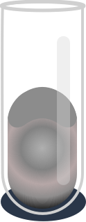

LITHIUM
Periodic Content
Lithium
Element
3
Atomic Number
1s
Block
Li
Symbol
6.94
Atomic Weight
Alkali Metal
Element Group
Physical Properties
Silver
Colour
Solid
Phase
453.65 K
Melting Point
1603 K
Boiling Point
0.534 g/cm3
Density
/
Triple Point
3220 K, 67 MPa
Critical Point
3.00 kJ/mol
Heat of Fusion
136 kJ/mol
Heat of Vap
224.860 J/(mol·K)
Molar heat Capacity
Properties
Combustion
Lithium reacts with water easily, but with noticeably less energy than other alkali metals. The reaction forms hydrogen gas and lithium hydroxide in aqueous solution. Because of its reactivity with water, lithium is usually stored in a hydrocarbon sealant, often petroleum jelly. Though the heavier alkali metals can be stored in more dense substances, such as mineral oil, lithium is not dense enough to be fully submerged in these liquids. In moist air, lithium rapidly tarnishes to form a black coating of lithium hydroxide (LiOH and LiOH·H2O), lithium nitride (Li3N) and lithium carbonate (Li2CO3, the result of a secondary reaction between LiOH and CO2).
When placed over a flame, lithium compounds give off a striking crimson color, but when it burns strongly the flame becomes a brilliant silver. Lithium will ignite and burn in oxygen when exposed to water or water vapors.[17] Lithium is flammable, and it is potentially explosive when exposed to air and especially to water, though less so than the other alkali metals. The lithium-water reaction at normal temperatures is brisk but nonviolent because the hydrogen produced does not ignite on its own. As with all alkali metals, lithium fires are difficult to extinguish, requiring dry powder fire extinguishers (Class D type). Lithium is the only metal which reacts with nitrogen under normal conditions
Lithium has a diagonal relationship with magnesium, an element of similar atomic and ionic radius. Chemical resemblances between the two metals include the formation of a nitride by reaction with N2, the formation of an oxide (Li2O) and peroxide (Li2O2) when burnt in O2, salts with similar solubilities, and thermal instability of the carbonates and nitrides.[16][20] The metal reacts with hydrogen gas at high temperatures to produce lithium hydride (LiH).
Other known binary compounds include halides (LiF, LiCl, LiBr, LiI), sulfide (Li2S), superoxide (LiO2), and carbide (Li2C2). Many other inorganic compounds are known in which lithium combines with anions to form salts: borates, amides, carbonate, nitrate, or borohydride (LiBH4). Lithium aluminium hydride (LiAlH4) is commonly used as a reducing agent in organic synthesis.
Electron Energy Levels
The lithium atom has a closed n=1 shell with two electrons and then one electron outside. Since the outer electron looks inward at just one net positive charge, it could be expected to have energy levels close to those of hydrogen. This is true for high angular momentum states as shown, but the s and p states fall well below the corresponding hydrogen energy levels.
Lithium Phases
Solid Lithium
Lithium metal is soft enough to be cut with a knife. When cut, it possesses a silvery-white color that quickly changes to gray as it oxidizes to lithium oxide.While it has one of the lowest melting points among all metals (180 °C), it has the highest melting and boiling points of the alkali metals.
Isotopes of Lithium
6Li and 7Li
Naturally occurring lithium is composed of two stable isotopes, 6Li and 7Li, the latter being the more abundant (92.5% natural abundance). Both natural isotopes have anomalously low nuclear binding energy per nucleon (compared to the neighboring elements on the periodic table, helium and beryllium); lithium is the only low numbered element that can produce net energy through nuclear fission. The two lithium nuclei have lower binding energies per nucleon than any other stable nuclides other than deuterium and helium-3. As a result of this, though very light in atomic weight, lithium is less common in the Solar System than 25 of the first 32 chemical elements. Seven radioisotopes have been characterized, the most stable being 8Li with a half-life of 838 ms and 9Li with a half-life of 178 ms. All of the remaining radioactive isotopes have half-lives that are shorter than 8.6 ms. The shortest-lived isotope of lithium is 4Li, which decays through proton emission and has a half-life of 7.6 × 10−23 s.
7Li is one of the primordial elements (or, more properly, primordial nuclides) produced in Big Bang nucleosynthesis. A small amount of both 6Li and 7Li are produced in stars, but are thought to be "burned" as fast as produced.[27] Additional small amounts of lithium of both 6Li and 7Li may be generated from solar wind, cosmic rays hitting heavier atoms, and from early solar system 7Be and 10Be radioactive decay.[28] While lithium is created in stars during stellar nucleosynthesis, it is further burned. 7Li can also be generated in carbon stars.
History
The first lithium mineral petalite, LiAlSi4O10, was discovered on the Swedish island of Utö by the Brazilian, Jozé Bonifácio de Andralda e Silva in the 1790s. It was observed to give an intense crimson flame when thrown onto a fire. In 1817, Johan August Arfvedson of Stockholm analysed it and deduced it contained a previously unknown metal, which he called lithium. He realised this was a new alkali metal and a lighter version of sodium. However, unlike sodium he was not able to separate it by electrolysis. In 1821 William Brande obtained a tiny amount this way but not enough on which to make measurements. It was not until 1855 that the German chemist Robert Bunsen and the British chemist Augustus Matthiessen obtained it in bulk by the electrolysis of molten lithium chloride.